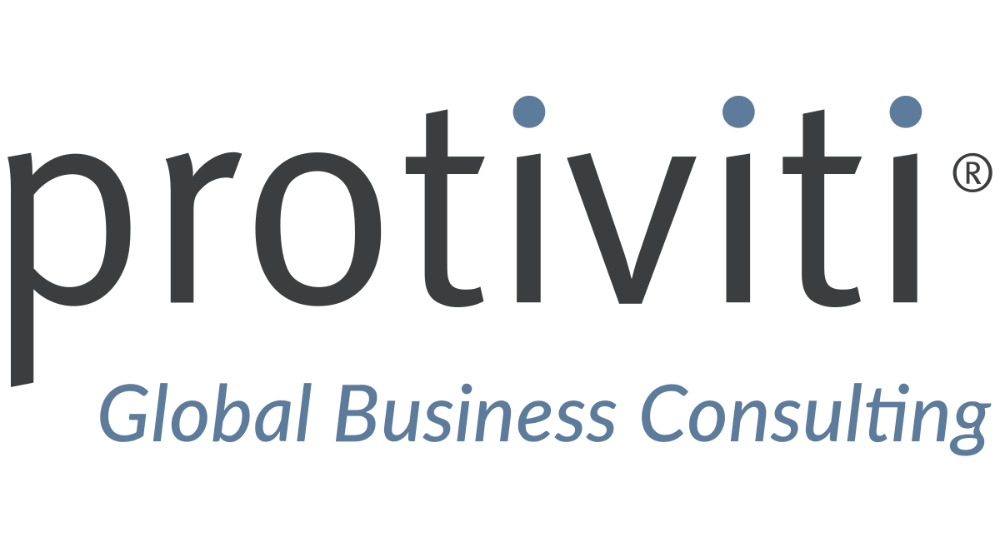

Consultant turned data & analytics leader with 9+ years across Deloitte, Protiviti, and Grant Thornton. I deliver KPI dashboards, SOX/ITGC analytics, and ERP‑enabled operating models across Finance and Supply Chain. Currently completing an MS in Business Analytics at DePaul (’25) and holding an MBA, focusing on AI Strategy, Governance, and Data‑Driven Decision Systems.
Expertise: SQL, Python, Power BI, Tableau, SAP S/4HANA, Oracle Cloud ERP, Snowflake, Databricks, Azure, and Microsoft Fabric.
Experience
Data & Business Intelligence Analyst — DePaul University
Jan 2025 — Present · Chicago, IL
Develop advanced dashboards and predictive models to support institutional planning and student engagement.
Tools: Power BI, SQL, Python, Snowflake.
Manager — Digital Transformation & Data Analytics — Deloitte
Aug 2020 — Dec 2024
Led ERP-enabled analytics initiatives across Finance, SOX, and Supply Chain for global clients.
Architected automated KPI models and internal control dashboards (SAP / Oracle Cloud).

Senior Consultant — Data Analytics & Audit — Protiviti
Feb 2019 — Jul 2020
Delivered data-driven SOX testing frameworks and reconciliations across multi-entity groups.
Data Management Consultant — Grant Thornton
Apr 2016 — Jan 2019
Implemented data governance and reconciliation frameworks for multi-country operations.